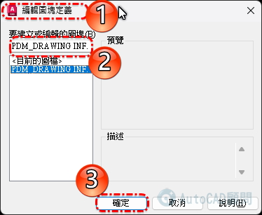
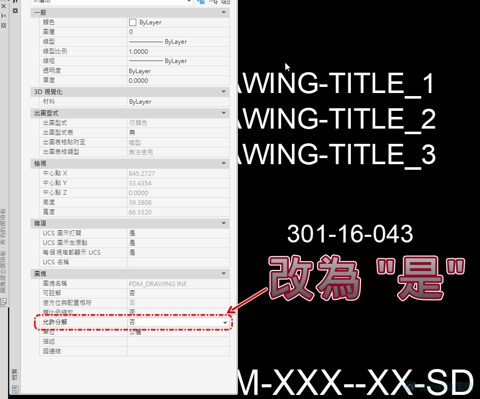

工作中有時常會使用圖塊滿足工作需求，而因應不同工作任務需求，有時需要使用圖塊更名、變更圖塊基準點或分解圖塊。
關於AutoCAD中圖塊編輯預設工具，圖塊更名可以透過RENAME指令，變更圖塊基準點則需透過「圖塊編輯器」或是分解重作等方式，有時分解圖塊時候，若遇到「不允許分解」的圖塊就很傷腦筋，因為需轉換DXF檔案格式才可分解（或使用舊版）！
在這裡介紹三個免費的外掛程式，相信對於大家的工作可以提供不少幫助，有興趣的朋友請趕緊免費安裝使用～
註：AutoCAD Exchange 外掛程式，目前僅支援2012及2013以上版本。
一、圖塊更名工具：
二、變更圖塊基準點工具：
三、炸開不允許分解圖塊工具：
預設手動方式更改為【允許分解】圖塊
BEDIT指令 >> 找到圖塊 >> 開啟性質 >> 設置 允許分解(是)

